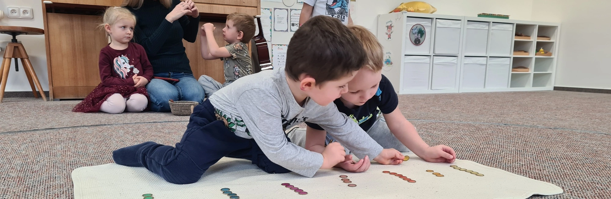
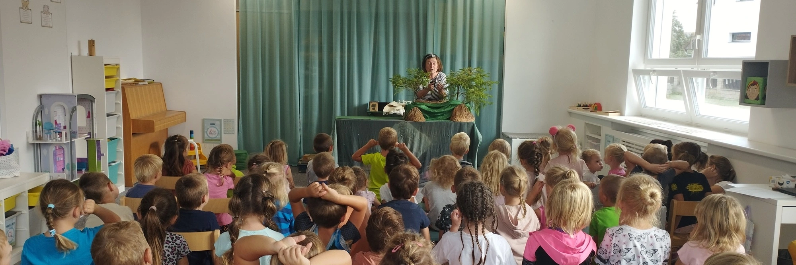
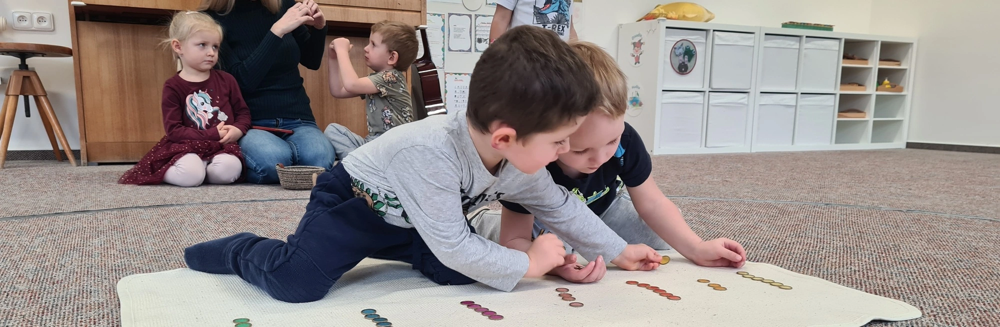
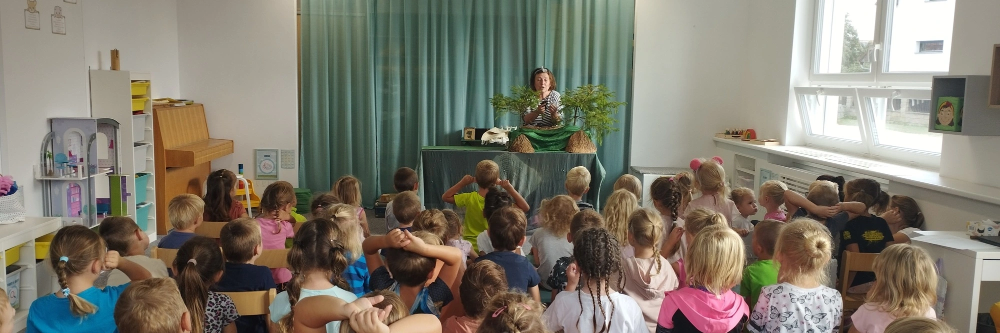

Mateřská škola Kostomlaty nad Labem, příspěvková organizace se zavazuje k zpřístupnění svých webových stránek www.mskostomlatynl.cz v souladu s vnitrostátními právními předpisy, které provádějí směrnici Evropského parlamentu a Rady (EU) 2016/2102.
Toto prohlášení o přístupnosti se vztahuje na tyto webové stránky www.mskostomlatynl.cz.
Stav souladu
Tyto webové stránky www.mskostomlatynl.cz jsou částečně v souladu s požadavky § 4 a 5 zákona č. 99/2019 Sb., o přístupnosti internetových stránek a mobilních aplikací a o změně zákona č. 365/2000 Sb., o informačních systémech veřejné správy a o změně některých dalších zákonů, ve znění pozdějších předpisů, z důvodu nedostatečně přístupného obsahu nebo výjimek uvedených níže
Na tomto webu se vyskytují informace dostupné v podobě dokumentů formátu PDF z důvodu velikosti, usnadnění tisku a formátování, které webový formát nepodporuje. Pro náhled do tohoto formátu lze stáhnout bezplatný prohlížeč Acrobat Reader, nemá-li váš internetový prohlížeč již prohlížeč tohoto formátu v sobě integrovaný.
Nepřístupný obsah
Níže uvedený obsah není přístupný z důvodu něpřiměřené zátěže:
PDF dokumenty, jež nejsou strojově čitelné, v jejichž případě je dočasně uplatňována výjimka z důvodu nepřiměřené zátěže ve smyslu článku 5 směrnice (EU) 2016/2102.
Vypracování tohoto prohlášení o přístupnosti
Toto prohlášení bylo vypracováno dne 13.5.2024.
Pro vypracování tohoto prohlášení byla v souladu s čl. 3 odst. 1 prováděcího rozhodnutí Komise (EU) 2018/1523 použita metoda vlastního posouzení provedeného subjektem veřejného sektoru.
Prohlášení bylo revidováno dne 13.5.2024.
Zpětná vazba a kontaktní údaje
Veškeré problémy z hlediska souladu s § 4 a 5, či případné dotazy, návrhy a připomínky lze směřovat na e-mailovou adresu ms.kostomlatynl@gmail.com.
Kontaktní údaje na správce webu jsou e-mailová adresa web.addyy@gmail.com.
Postupy pro prosazování práva
V případě neuspokojivé odpovědi na oznámení nebo žádost zaslanou v souladu s čl. 7 odst. 1 písm. b) směrnice je možné kontaktovat odbor eGovernmentu Ministerstva vnitra ČR, náměstí Hrdinů 1634/3, 140 21 Praha 4 na e-mailové adrese pristupnost@mvcr.cz.